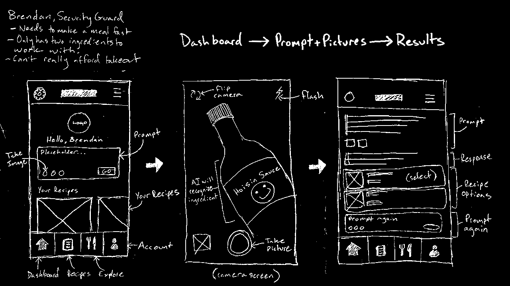
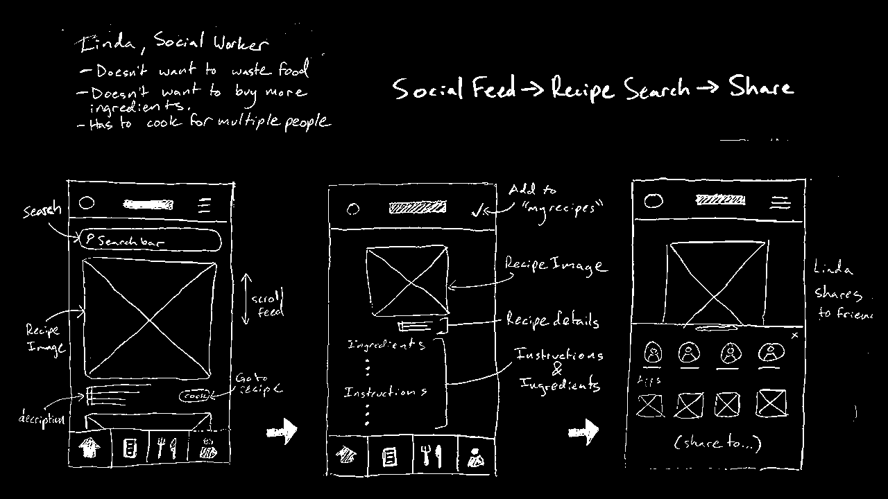
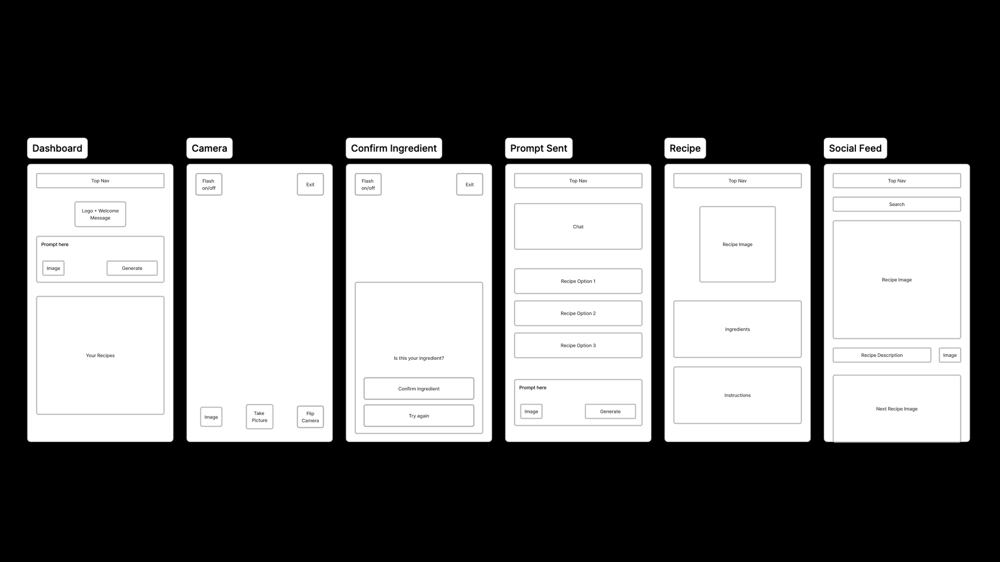

Oddgredients

Have you ever found yourself needing to make a meal but all you have are a couple of stray ingredients? Oddgredients is an AI native recipe assistant created to help its users turn their mismatched ingredients and leftovers into fun, delicious meals. Prompt the AI chatbot, take pictures of what you’re working with and let Oddgredients do the rest. Oddgredients also has a social media feature that allows users to browse recipes and share their creations with others. Turn your odd ingredients gourmet!
Demonstration
Key Features
AI recipe creation.
AI ingredient recognition.
Share and browse unique recipes.
Research
User Personas
Brendan, 23 — Security Guard
23 year old college senior living with roommates.
Goes to class in the morning and works the second shift (4:00pm to midnight).
Due to lack of time, Brendan often orders takeout more than he can afford.
Often finds himself in a pinch in terms of his meals.
Linda, 46 — Social Worker
46 year old mom with two kids.
Both her and her husband are environmentally conscious and want to limit their food waste.
Works during the day and cooks dinner for her family in the evening.
Often finds herself reluctantly throwing away leftovers.
Current User Flow
Brendan
- Brendan gets home after school and needs to make a meal before work.
- He doesn’t have the time or money to go grocery shopping.
- Brendan rummages through his kitchen. All he has to work with is a potato and some hoisin sauce.
- Brendan is upset. He doesn’t know what to make and is running out of time before his shift.
- His options are to Doordash a meal at work, using his credit card, or go hungry.
Pain Points
- Brendan thinks he has nothing to work with and is exhausted from school.
- He is working within a tight budget and doesn’t want to use his credit card.
- He has limited time to make a meal and is considering just skipping dinner entirely.
Linda
- Linda gets home from work and is tasked with making dinner for herself, her kids and her husband.
- She has a couple of thai chili peppers that she needs to use before they go bad.
- She also has some pre-made pancake mix from the day before that is starting to get crusty.
- Linda throws out the pancake mix and decides to go to the grocery store and buy ingredients for a dish that she can use the chili peppers in.
- Linda feels bad that she wasted her pancake mix and ends up spending $50 at the grocery store.
Pain Points
- Linda has multiple ingredients that will go to waste if she doesn’t use them.
- She thinks that she can’t work them both into a recipe.
- She has to decide which ingredient to keep and which ingredient to throw out.
- She ends up spending too much money at the grocery store on a recipe she only has one ingredient for.
Happy Path
Brendan
01
Describe the Craving
Brendan downloads the Oddgredients app and describes what he’s in the mood to eat.
02
Snap Ingredients
He takes pictures of his ingredients and sends them to the chat bot.
03
Get Recipes
Oddgredients gives Brendan three quick and easy recipe options and even recommends supplementary ingredients.
04
Cook & Save
Brendan makes the recipe he is recommended by Oddgredients and doesn’t have to spend money or go hungry during his shift.
Linda
01
Open the App
Linda opens the Oddgredients app because she isn’t sure how to turn her leftovers into a meal.
02
Explore & Search
She opens the “explore” tab and searches for the ingredient she wants to use.
03
Find a Recipe
She finds a recipe for “Chili Pepper Pancakes.” She is able to use her leftovers and her odd ingredient to make a delicious meal.
04
Share & Save
Her husband and kids love the recipe. Linda saves it to the “my recipes” tab and shares it with a friend.
Sketches & Wireframes


Sketch 02